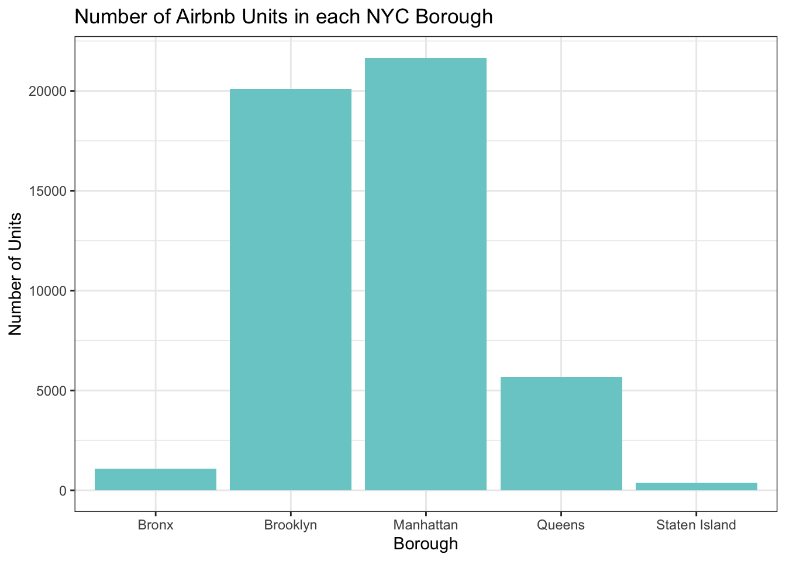

library(tidyverse)
library(ggplot2)
library(summarytools)
knitr::opts_chunk$set(echo = TRUE, warning=FALSE, message=FALSE)Challenge 5: Airbnb in NYC
challenge_5
air_bnb
Justine Shakespeare
Introduction to Visualization
Load in the Data
Today let’s take a look at the AB_NYC_2019 dataset.
Airbnb_NYC <- read_csv("_data/AB_NYC_2019.csv")
glimpse(Airbnb_NYC)Rows: 48,895
Columns: 16
$ id <dbl> 2539, 2595, 3647, 3831, 5022, 5099, 512…
$ name <chr> "Clean & quiet apt home by the park", "…
$ host_id <dbl> 2787, 2845, 4632, 4869, 7192, 7322, 735…
$ host_name <chr> "John", "Jennifer", "Elisabeth", "LisaR…
$ neighbourhood_group <chr> "Brooklyn", "Manhattan", "Manhattan", "…
$ neighbourhood <chr> "Kensington", "Midtown", "Harlem", "Cli…
$ latitude <dbl> 40.64749, 40.75362, 40.80902, 40.68514,…
$ longitude <dbl> -73.97237, -73.98377, -73.94190, -73.95…
$ room_type <chr> "Private room", "Entire home/apt", "Pri…
$ price <dbl> 149, 225, 150, 89, 80, 200, 60, 79, 79,…
$ minimum_nights <dbl> 1, 1, 3, 1, 10, 3, 45, 2, 2, 1, 5, 2, 4…
$ number_of_reviews <dbl> 9, 45, 0, 270, 9, 74, 49, 430, 118, 160…
$ last_review <date> 2018-10-19, 2019-05-21, NA, 2019-07-05…
$ reviews_per_month <dbl> 0.21, 0.38, NA, 4.64, 0.10, 0.59, 0.40,…
$ calculated_host_listings_count <dbl> 6, 2, 1, 1, 1, 1, 1, 1, 1, 4, 1, 1, 3, …
$ availability_365 <dbl> 365, 355, 365, 194, 0, 129, 0, 220, 0, …Data Description
This data appears to be Airbnb rentals in New York City in 2019. There are almost 49,000 observations, each of which looks to represent one rental unit. There are 16 variables which provide information about the unit (id and name), hosts (id and name of the host) the location (including neighborhood, city borough, and longitude and latitude), the room type, price, the number of minimum nights required for a reservation, review (number of reviews, date of last review, and average reviews per month), something called a “calculated_host_listings_count” (possibly a count of how many listings the host has with Airbnb) and availability (I’m guessing this is how many days of the year the unit is available).
The data looks pretty tidy already and I don’t think there are any variables that we’ll want to create or change. There are some variables we may want to explore that have outliers we may need to remove. We’ll return to this later in the analysis.
Univariate Visualizations
Let’s use the geom_bar() function to look at how many units are in each city borough.
ggplot(Airbnb_NYC, aes(neighbourhood_group)) + geom_bar(fill = "darkslategray3") + labs(title = "Number of Airbnb Units in each NYC Borough", x = "Borough", y = "Number of Units") +
theme_bw()
It’s not surprising the the majority of the units are in Brooklyn and Manhattan. Let’s take a look at the breakdown of room types.
ggplot(Airbnb_NYC, aes(x = room_type)) + geom_bar(fill = "cornflowerblue") + labs(title = "Airbnb Units by Room Type", x = "Room Type", y = "Number of Units") +
theme_bw()
Most units are either the entire home/apartment or a private room.
Bivariate Visualization
Let’s try to combine these variables in a visualization to get a breakdown of the room type in each borough.
ggplot(Airbnb_NYC, aes(neighbourhood_group, fill = room_type)) +
geom_bar(stat = "count") +
labs(title = "Number of Airbnb Units in each NYC Borough", x = "Borough", y = "Number of Units") +
scale_fill_discrete(name = "Room Type") +
theme_bw()There are more units in Manhattan that are the entire home/apartment, while Brooklyn has the most private rooms.
Additional Visualizations
Let’s take a look at the distribution of price of Airbnb units across the city.
ggplot(Airbnb_NYC, aes(x = price)) + geom_histogram(fill = "cornflowerblue") +
labs(title = "Price of Airbnb Units in NYC", x = "Price of Unit", y = "Number of Units") +
theme_bw()This visualization is a little tough to read and it’s hard to get a sense of the distribution. It looks as if there must be a miniscule number of outlier units that cost up to around $10,000. Let’s take a closer look at this variable.
Airbnb_NYC %>%
summarize("mean" = mean(price, na.rm = TRUE),
"standard_deviation" = sd(price, na.rm = TRUE),
"lowest" = min(price, na.rm = TRUE),
"25th quantile" = quantile(price, probs = .25),
"median" = median(price, na.rm = TRUE),
"75th quantile" = quantile(price, probs = .75),
"99 quantile" = quantile(price, .99),
"highest" = max(price, na.rm = TRUE))# A tibble: 1 × 8
mean standard_deviation lowest `25th quantile` median 75th …¹ 99 qu…² highest
<dbl> <dbl> <dbl> <dbl> <dbl> <dbl> <dbl> <dbl>
1 153. 240. 0 69 106 175 799 10000
# … with abbreviated variable names ¹`75th quantile`, ²`99 quantile`It’s a little odd that there are some units in the dataset that cost $0, it’s likely that this means that some of these units do not have a price listed for some reason. We can also see that there does appear to be at least one outlier unit that costs $10,000. Since we can also see that 99% of the units cost less than $800, let’s just focus on units that cost less than $1,000.
We’ll use the geom_histogram() function to take a look at the price distribution of units that cost less than $1,000. First we’ll graph one for all types of units, then we’ll try another with just units that are the entire home/apartment.
Airbnb_NYC_rm <- filter(Airbnb_NYC, price < 1000)
# prices for all units
ggplot(Airbnb_NYC_rm, aes(x = price)) + geom_histogram(fill = "cornflowerblue") +
labs(title = "Price of Airbnb Units in NYC", x = "Price of Unit", y = "Count") +
theme_bw()# prices of just entire homes/apartments
Airbnb_NYC_rm %>% filter(room_type == "Entire home/apt") %>%
ggplot(aes(x = price)) + geom_histogram(fill = "darkturquoise") +
labs(title = "Price of Entire Home/Apartment type Airbnb Units in NYC", x = "Price of Unit", y = "Count") +
theme_bw()We can see looking at these two graphs that the price point of entire home/apt units is higher than the price point for all types of units.
Let’s look at the average price of Airbnb units in different boroughs.
Airbnb_NYC %>%
filter(room_type == "Entire home/apt") %>%
group_by(neighbourhood_group) %>%
summarise(mean = mean(price)) %>%
ggplot(aes(neighbourhood_group,mean,)) +
geom_col(fill = "coral") +
labs(title = "Average Price of Airbnb Units by NYC Borough", x = "Borough", y = "Average Price") +
theme_bw()It is not surprising that, just like more long-term rentals and real estate purchases, Manhattan is the most expensive.
Finally, let’s plot the price of units with the number of reviews. I’m not sure this is terribly meaningful, but it will give us a chance to practice graphing scatter plots. In order to practice some additional functions, let’s focus just on units in Brooklyn and we’ll have the color of the points represent the room type variable.
Airbnb_NYC_rm %>%
filter(neighbourhood_group == "Brooklyn") %>%
ggplot(aes(x = price, y = number_of_reviews, color = room_type)) +
geom_point() +
labs(title = "Price of Airbnb Units in Brooklyn",
x = "Price of Unit", y = "Number of Reviews") +
scale_colour_discrete("Room Type") +
theme_bw()This graph is a little hard to read and doesn’t really tell us much, but I am VERY curious about the data point on this plot that indicates there is a shared room in Brooklyn going for $750 a night! Even in New York that seems a little steep…let’s take a closer look.
Expensive_room <- Airbnb_NYC_rm %>%
filter(neighbourhood_group == "Brooklyn" & number_of_reviews == 0 &
price > 700 & price < 750)
print(Expensive_room[, c("name", "neighbourhood_group", "neighbourhood", "price", "number_of_reviews", "last_review")])# A tibble: 1 × 6
name neighbourhood_group neighbourhood price numbe…¹ last_rev…²
<chr> <chr> <chr> <dbl> <dbl> <date>
1 Great for students! Brooklyn Bedford-Stuy… 725 0 NA
# … with abbreviated variable names ¹number_of_reviews, ²last_reviewHard to believe this price point would be targeted to students! It’s not surprising that there are no reviews, indicating this unit may never have been rented out. The price here might be a mistake, but knowing New York, it’s very possible it’s not. (!!!)